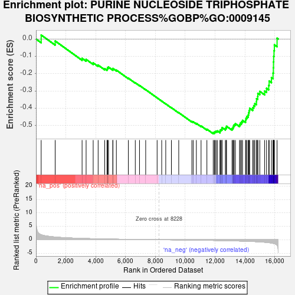
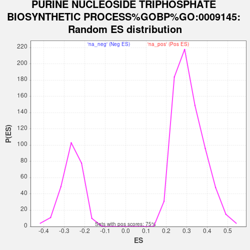

| Dataset | PAL_vs_CTL_ranked |
| Phenotype | NoPhenotypeAvailable |
| Upregulated in class | na_neg |
| GeneSet | PURINE NUCLEOSIDE TRIPHOSPHATE BIOSYNTHETIC PROCESS%GOBP%GO:0009145 |
| Enrichment Score (ES) | -0.5464896 |
| Normalized Enrichment Score (NES) | -2.068296 |
| Nominal p-value | 0.0 |
| FDR q-value | 0.005251254 |
| FWER p-Value | 0.107 |

| SYMBOL | RANK IN GENE LIST | RANK METRIC SCORE | RUNNING ES | CORE ENRICHMENT | |
|---|---|---|---|---|---|
| 1 | PRKAG2 | 347 | 1.877 | 0.0230 | No |
| 2 | SDHD | 1286 | 1.000 | -0.0114 | No |
| 3 | MT-ND4L | 3089 | 0.487 | -0.1114 | No |
| 4 | ATP5PF | 3359 | 0.445 | -0.1175 | No |
| 5 | NDUFA5 | 3833 | 0.374 | -0.1380 | No |
| 6 | MT-ND2 | 4165 | 0.330 | -0.1506 | No |
| 7 | MT-ND5 | 4604 | 0.278 | -0.1712 | No |
| 8 | SDHC | 4759 | 0.263 | -0.1745 | No |
| 9 | MT-ATP6 | 4792 | 0.259 | -0.1703 | No |
| 10 | MT-ND6 | 4794 | 0.258 | -0.1643 | No |
| 11 | NDUFC2 | 4859 | 0.252 | -0.1623 | No |
| 12 | MT-ATP8 | 5151 | 0.222 | -0.1750 | No |
| 13 | MT-ND4 | 5153 | 0.222 | -0.1698 | No |
| 14 | MT-ND1 | 5386 | 0.198 | -0.1795 | No |
| 15 | MT-ND3 | 6189 | 0.130 | -0.2260 | No |
| 16 | IMPDH1 | 6654 | 0.098 | -0.2524 | No |
| 17 | ATP5MG | 6937 | 0.080 | -0.2680 | No |
| 18 | NDUFA12 | 7351 | 0.051 | -0.2923 | No |
| 19 | NDUFS1 | 8117 | 0.005 | -0.3396 | No |
| 20 | NDUFV2 | 8424 | -0.011 | -0.3583 | No |
| 21 | SLC25A13 | 8695 | -0.028 | -0.3743 | No |
| 22 | ALDOA | 9074 | -0.051 | -0.3965 | No |
| 23 | ATP5PO | 9566 | -0.083 | -0.4249 | No |
| 24 | NDUFA6 | 10446 | -0.146 | -0.4759 | No |
| 25 | NDUFB8 | 10534 | -0.153 | -0.4777 | No |
| 26 | ATP5MK | 10747 | -0.170 | -0.4868 | No |
| 27 | VPS9D1 | 11062 | -0.195 | -0.5016 | No |
| 28 | NDUFS4 | 11453 | -0.227 | -0.5204 | No |
| 29 | SDHB | 11876 | -0.267 | -0.5402 | Yes |
| 30 | NDUFV3 | 11952 | -0.274 | -0.5383 | Yes |
| 31 | ATP5PD | 11997 | -0.279 | -0.5344 | Yes |
| 32 | NDUFA9 | 12072 | -0.287 | -0.5322 | Yes |
| 33 | ATP5MC1 | 12153 | -0.296 | -0.5302 | Yes |
| 34 | IMPDH2 | 12334 | -0.316 | -0.5338 | Yes |
| 35 | ATP5F1C | 12338 | -0.317 | -0.5265 | Yes |
| 36 | TGFB1 | 12401 | -0.324 | -0.5227 | Yes |
| 37 | NDUFA1 | 12467 | -0.333 | -0.5188 | Yes |
| 38 | NDUFB6 | 12468 | -0.333 | -0.5109 | Yes |
| 39 | NDUFB2 | 12692 | -0.360 | -0.5162 | Yes |
| 40 | ATP5ME | 12743 | -0.367 | -0.5106 | Yes |
| 41 | ATP5PB | 12768 | -0.369 | -0.5033 | Yes |
| 42 | NDUFS5 | 13138 | -0.417 | -0.5163 | Yes |
| 43 | NDUFA8 | 13202 | -0.427 | -0.5101 | Yes |
| 44 | ATP5MF | 13236 | -0.432 | -0.5019 | Yes |
| 45 | COX11 | 13280 | -0.439 | -0.4942 | Yes |
| 46 | NDUFA13 | 13361 | -0.450 | -0.4885 | Yes |
| 47 | NDUFB5 | 13641 | -0.493 | -0.4941 | Yes |
| 48 | NME2 | 13693 | -0.501 | -0.4854 | Yes |
| 49 | NDUFB3 | 13774 | -0.518 | -0.4780 | Yes |
| 50 | ATP5F1D | 13839 | -0.530 | -0.4695 | Yes |
| 51 | NDUFA10 | 14043 | -0.566 | -0.4686 | Yes |
| 52 | ATP5F1E | 14069 | -0.571 | -0.4566 | Yes |
| 53 | ATP5MC3 | 14128 | -0.585 | -0.4464 | Yes |
| 54 | NDUFS2 | 14224 | -0.605 | -0.4379 | Yes |
| 55 | NDUFA11 | 14248 | -0.610 | -0.4249 | Yes |
| 56 | NDUFA3 | 14283 | -0.618 | -0.4123 | Yes |
| 57 | NDUFS6 | 14319 | -0.625 | -0.3997 | Yes |
| 58 | NDUFS8 | 14525 | -0.669 | -0.3966 | Yes |
| 59 | NDUFB4 | 14592 | -0.687 | -0.3844 | Yes |
| 60 | NDUFV1 | 14662 | -0.704 | -0.3720 | Yes |
| 61 | ATP5MJ | 14774 | -0.737 | -0.3614 | Yes |
| 62 | NDUFS7 | 14779 | -0.739 | -0.3441 | Yes |
| 63 | NME1 | 14856 | -0.759 | -0.3308 | Yes |
| 64 | NDUFB1 | 14867 | -0.763 | -0.3134 | Yes |
| 65 | NUDT2 | 14998 | -0.806 | -0.3023 | Yes |
| 66 | ATP5MC2 | 15323 | -0.936 | -0.3002 | Yes |
| 67 | ATP5F1B | 15450 | -1.000 | -0.2843 | Yes |
| 68 | NDUFAB1 | 15596 | -1.098 | -0.2673 | Yes |
| 69 | NDUFB7 | 15624 | -1.117 | -0.2425 | Yes |
| 70 | NDUFB9 | 15778 | -1.240 | -0.2226 | Yes |
| 71 | ATP5F1A | 15885 | -1.360 | -0.1969 | Yes |
| 72 | NDUFB11 | 15907 | -1.385 | -0.1654 | Yes |
| 73 | NDUFC1 | 15915 | -1.399 | -0.1327 | Yes |
| 74 | SDHA | 15924 | -1.413 | -0.0997 | Yes |
| 75 | NDUFA2 | 15950 | -1.447 | -0.0670 | Yes |
| 76 | NDUFS3 | 15974 | -1.480 | -0.0333 | Yes |
| 77 | NDUFB10 | 16155 | -2.071 | 0.0046 | Yes |
